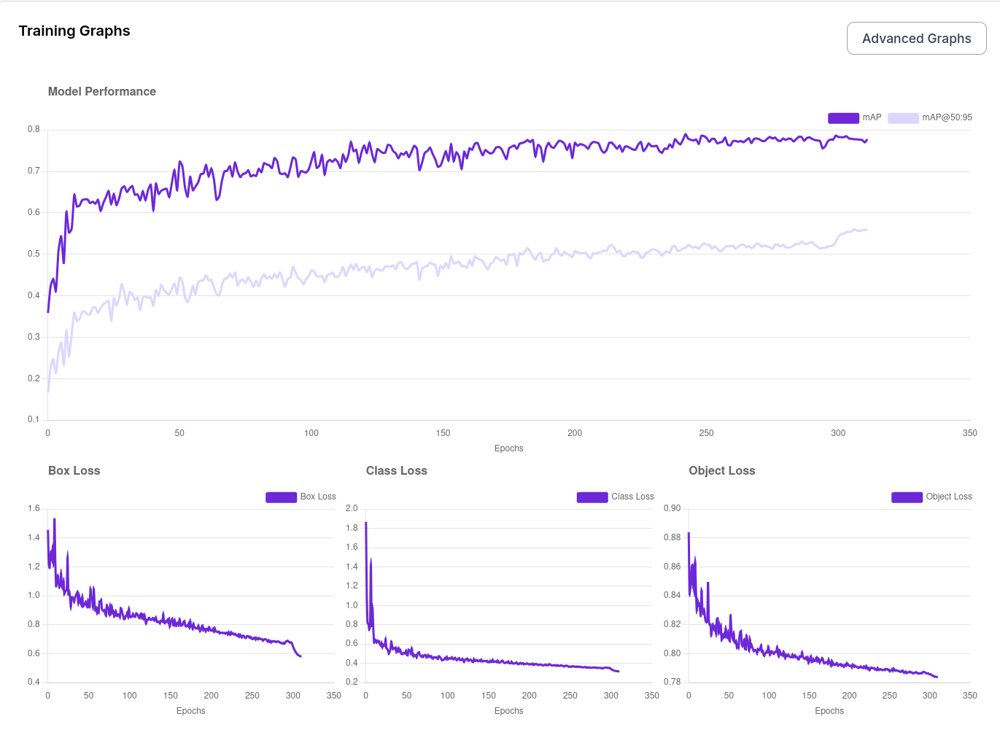
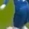
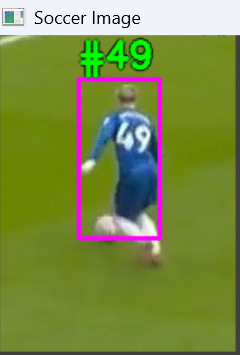
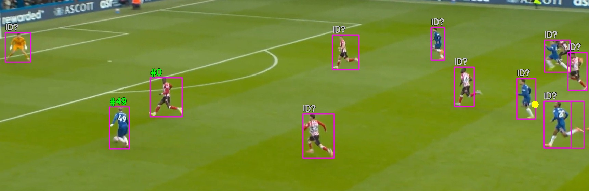
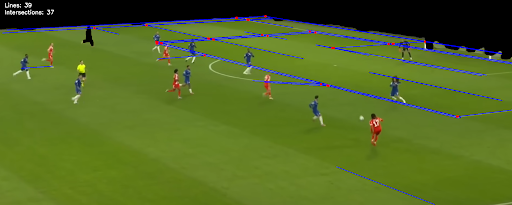
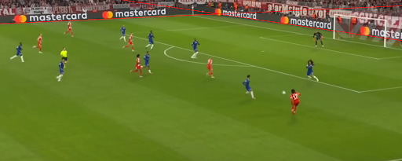
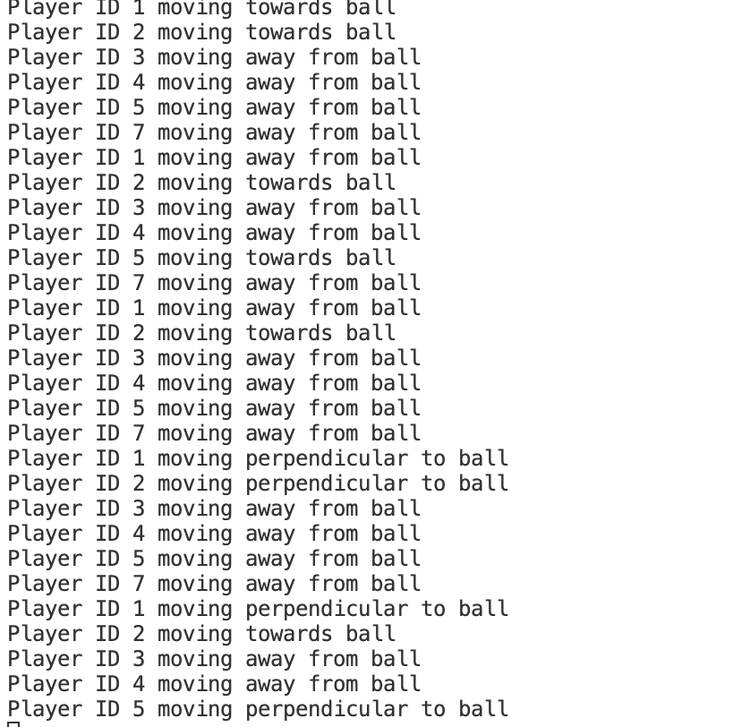
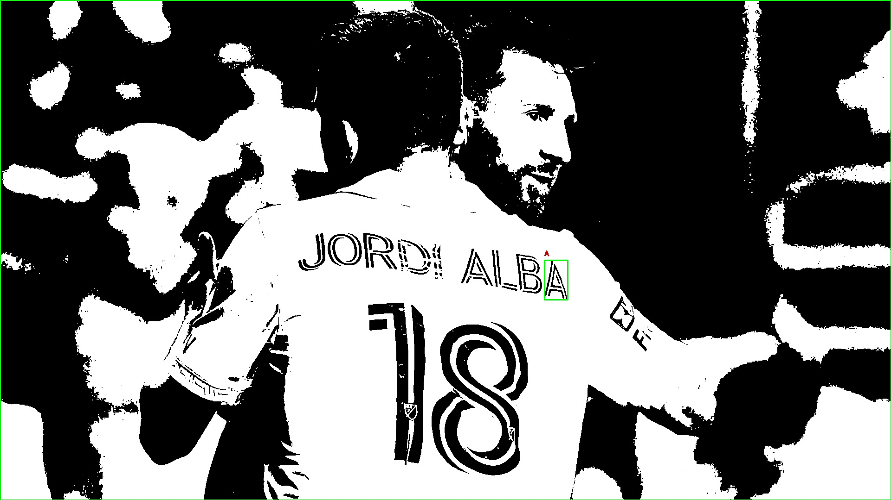

Soccer matches have a lot going on; it can be difficult for the audience to keep track of them. As a result, live
commentaries are often selective and not holistic, failing to capture the whole picture. This poses a real problem
for blind audiences, who cannot independently keep track of the game.
Our project seeks to address this challenge by generating real-time text commentary from a soccer video stream.
In addition, it will challenge us on our Computer Vision concepts, allowing us to apply key methods learned in class
and deepen our understanding, pushing us to pursue this project.
We noticed the goal of generalizability. Voice Watch from Dentsu is a powerful tool for the visually impaired at racecar competitions, but there are hopes to make this tool work for other unordinary events (children’s sporting events).
This resource aided our implementation of the ball tracking algorithm.
What was our approach? How did we implement it?
We had the core tasks of:
Object detection for players and the ball
OCR (optical character recognition) for recognizing jersey numbers and team identity
Object tracking to support continuous gameplay
Localization to identify locations on the field
Have output: concise, human-readable commentary lines in the console
For object detection, we ended up utilizing Ultralytics YOLO AI framework model for its ease of use and good performance.
Keiji's first approach was to use a neural network to generate bounding boxes for the players and the ball.
YOLO11 was available on the Roboflow platform and provided a dataset of 663 images for training.
An image of its success in distinguishing players on the field and the sidelines:

The training graph above demonstrates a good performance of 99% accuracy on players but only 57% accuracy on the ball.
Keiji presumed the ball's fast movement caused the lower accuracy.
For OCR, we initally tested PyTesseract, EasyOCR, and the jersey-number-pipeline Github repo for inspiration.
See The problems we encountered section for why we skipped PyTesseract.
Varun's first approach was learning the OCR algorithm and pipeline from the Github repo. Despite the prolific image dataset (SoccerNet Jersey Number Recognition) and
ReID algorithm to find outliers of unidentifiable jersey numbers to be excluded from OCR, the time to extract features
from our images took far too long: 12 images per hour.
Varun thus implemented the core OCR pipeline steps manually: start with a cropped image of a player's back, detect the player, detect the ball, and perform OCR using the EasyOCR library.
Note, YOLOv8 was used for the detection tasks.
The rationale was that performing OCR on a smaller region would compute quicker. However, the images weren't getting cropped correctly.

An example of the cropped image

Varun resorted to keep the image as the bounding box around the player with the result to the left:
The next step was to expand this to all players in the image, but it was unsuccessful:

ReID could be implemented here to filter out jersey positions with unidentifiable numbers.
Another alternate solution is to continuously run OCR on every player every frame, waiting for the jersey number to become identifiable.
This cost is the speed of the system computation.
For object tracking, our methods were different for the players and the ball.
For the players, we simply continued to use what YOLOv8 provided, and it was successful.
For the ball, YOLOv8 wasn't effective. The model failed to detect the ball when it was moving and in posession of a player.
To address this, Varun referred to an online paper describing the use of Kalman filtering to estimate a soccer ball's velocity and motion trajectory,
and implemented a similar approach to predict the ball's position even when YOLO failed to detect it.
This was more effective, but because of an issue where the tracking was off due to the ball's sudden change in direction when kicked,
improvements were made to snap the ball tracker to the nearest player's leg.
This was more effective, but still failed in the case when the ball is kicked into the goal. It goes past the defender and the algorithm snaps it to the defender's leg.
For localization, Keiji first approached it using the Hough Line Transform:

His second approach was RANSAC:


For output, we used print statements for the players identity and their following action:
Results
We reconfigured the program on Google Colab to use its free GPU!
Object Tracking with an attempt at OCRObject Tracking and OCR with Localization
The problems we encountered
OCR

PyTesseract was a powerful tool, but it was not successful.
We tried to use traditional methods of contours and edge detection to begin the process of identifying players.
But, we struggled getting the program to differentiate what was needed (players, balls, jerseys, and jersey numbers)
and what wasn't needed (field, people and text in the background, noise on the field).
Even filtering strategies, like checking the area of the contour (min max constraint) were not effective,
considering the players and ball can change size depending on the camera.
OCR continued
An OCR model we wanted to work with took too long to extract features. We wanted to use OCR on cropped images sparingly,
but the cropping was incorrect.
Our main problem was the result of OCR: only one player was correctly identified.
Click here to read more.
Improved ball tracking algorithm that handles sudden changes in velocity and goal siutations.
Generalizability was an end goal we had in our proposal. We have not yet tested on similar sports,
but our reliance on the YOLOv8 model and its dataset for soccer for our object detection helps us
understand that the more generalizable it is, the more expensive it would be to compute. Having a
neural network specific to a sport makes sense in this way. It's more accurate and cheaper to work with.
Different neural network models. For this project, using traditional computer vision methods sounded better,
but using machine learning turned out to be much easier to implement. YOLO was just one AI framework model we found, and there are more being implemented.